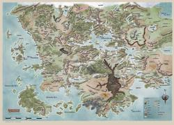

Forgotten Realms

Al-Qadim
Corm Orp
Forgotten Realms
Horde
Kara-Tur
Malatra The Living Jungle
Maztica
Regions of the Realms
Tour
Видеоигры по миру Forgotten Realms
От Врат Бальдура до Туйганской Орды
Самый детализированный мир фэнтези
Created by author and game designer Ed Greenwood as his personal campaign and detailed in a long series of articles in Dragon Magazine, Forgotten Realms became the most popular D&D setting from the late 1980s onwards and has been well received by both gamers and reviewers - Sean Patrick Fannon, author of The Fantasy Roleplaying Gamer's Bible, has praised the setting's scope and ambition and considered that it "may be the most widely played-in game setting in RPG history."[5]
The Forgotten Realms is a high fantasy world - magic is powerful, legendary monsters are commonplace, and gods often intervene directly in mortal affairs. Players can indulge in several types of fantasy adventures - from straightforward hack-and-slash treasure hunting in dungeons to epic campaigns involving regional wars, cataclysms and direct contact with gods and extra-dimensional beings.
The lands of the Forgotten Realms are not all ruled by the human race: the setting's planet, Abeir-Toril, is shared by humans, dwarves, elves, goblins, orcs, Dragons and other peoples and creatures. Technologically, the world resembles pre-industrial Earth of the 13th or 14th century. However, the strong presence of magic provides an additional element of power to the societies.
The main focus of the campaign is the region of Faerûn, the western part of a continent that was roughly modeled after the Eurasian continent on Earth. Faerûn was first detailed in the original Forgotten Realms Campaign Set, published in 1987 by TSR[6] and contains rough analogues of mythical versions of European, African and Middle Eastern cultures, as well as regions dominated by non-human races. Other areas include the Underdark (an underground realm dominated by evil elves), Maztica (inspired by Pre-Columbian Meso-America) and Kara-Tur (based on the mythical Far East).
For D&D's 4th edition, the setting was reworked: the timeline advanced into the future where a major cataclysm caused by a conflict amongst gods caused the previously divided worlds Abeir and Toril to collide with several geographical areas changing place. In 2014, with the launch of the 5th edition, the world of Forgotten Realms was again returned to its previous, 3rd edition geography.
This campaign is currently officially supported by Wizards of the Coast and over the years has expanded into a variety of other media, including literature, comics and video games. The highly successful Baldur's Gate, Icewind Dale, and Neverwinter Nights series of computer games are based on the Forgotten Realms, which is also the setting of a large number of novels, featuring, among others, the popular characters Drizzt Do'Urden, Artemis Entreri, and Elminster.
The Forgotten Realms are the default setting for the modules for 5th Edition of Dungeons & Dragons, although the D&D Multiverse (including Greyhawk, Eberron, Dragonlance, Mystara, and Planescape) is the default setting for the 5th Edition core books.[7]
Forgotten Realms (Забытые Королевства) — сеттинг для ролевой игры Dungeons & Dragons (D&D), созданный канадским писателем и разработчиком игр Эдом Гринвудом. Королевства стали самым популярным из миров D&D в 1990-е благодаря серии романов Роберта Сальваторе, а также компьютерным играм Pool of Radiance и Baldur's Gate. Наибольшее внимание в сеттинге уделяется огромному континенту под названием Фэйрун, части планеты Абер-Торил.
Это хорошо проработанный обширный фантастический мир, в котором много персонажей, мест и событий, описанных в длинном списке игровых продуктов, романов и приложений, издаваемых с конца 1980-х. Во времена третьей и трёхсполовинной редакций FR был одним из сеттингов для D&D, которые официально издавались и развивались Wizards of the Coast (вторым был Эберрон). Сейчас, помимо FR, издают в том или ином виде Eberron, Dark Sun и Gamma World.
3e
Hardbacks
11836 Forgotten Realms Campaign Setting
17665 Unapproachable East
17738 Lost Empires of Faerûn
17872 Champions of Ruin
17929 Shining South
88162 City of Splendors: Waterdeep
88578 Races of Faerûn
88581 Underdark
88643 Faiths and Pantheons
88647 Player's Guide to Faerûn
953667200 Power of Faerûn
96566 Serpent Kingdoms
882927200 Champions of Valor
9537172 Mysteries of the Moonsea
Boxed Sets
88433 City of the Spider Queen Miniatures
Accessories
11832 Monster Compendium: Monsters of Faerûn
11964 Magic of Faerûn
11989 Lords of Darkness
88567 Silver Marches
88686 Dungeon Master's Screen
Adventures
11634 Into the Dragon's Lair
11710 Pool of Radiance: Attack on Myth Drannor
88574 City of the Spider Queen
884467400 Sons of Gruumsh
LGR1 Extermination
LGR2 Gray Hunt
LGR3 Key to Phantoms' Cloister
LGR4 Secret of Phantoms' Cloister
LGR5 Dark Exodus
LGR6 Epidemic
LGR7 Nurture and Nature
LGR8 Rat's Bastard
LGR9 Denial of Resource
LGR11 Humility
LGR12 Tyranny
LGR13 Book Knowledge
LGR16 In Cold Blood
LGR18 Feast on the Moon
LGR19 Difference of Option
LGR20 The Howling of a Mighty Storm
XGR1 Under High Lord's Hall
XGR2 Dungeon of the Hark
XGR3 Undermountain
XGR4 Ruins of Karse